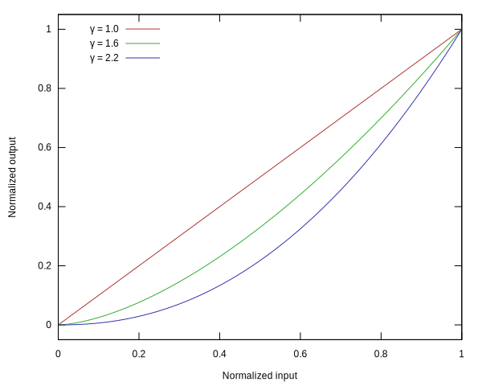

Lezione 2
Calcolo numerico per la generazione di immagini fotorealistiche
Maurizio Tomasi maurizio.tomasi@unimi.it
Lezione precedente
Radianza (flusso \Phi in Watt normalizzato sulla superficie proiettata per unità di angolo solido): L = \frac{\mathrm{d}^2\Phi}{\mathrm{d}\Omega\,\mathrm{d}A^\perp} = \frac{\mathrm{d}^2\Phi}{\mathrm{d}\Omega\,\mathrm{d}A\,\cos\theta}, \qquad [L] = \mathrm{W}/\mathrm{m}^2/\mathrm{sr}.
Equazione del rendering: \begin{aligned} L(x \rightarrow \Theta) = &L_e(x \rightarrow \Theta) +\\ &\int_{\Omega_x} f_r(x, \Psi \rightarrow \Theta)\,L(x \leftarrow \Psi)\,\cos(N_x, \Psi)\,\mathrm{d}\omega_\Psi. \end{aligned}
Codifica del colore
Le quantità \Phi, L, etc. sono tutte dipendenti dalla lunghezza d’onda \lambda (radianza → radianza spettrale)
In codici numerici che simulano la propagazione della luce, dobbiamo risolvere due problemi:
Una funzione f(\lambda) dipendente dalla lunghezza d’onda ha un numero infinito di gradi di libertà: come rappresentarla numericamente?
Nel nostro caso, la radianza viene percepita come un colore: ma come si specifica un colore quando si comanda un monitor o una stampante?

Emissioni realistiche
Non basta un numero per codificare un colore: questo è vero solo per un corpo nero ideale (dove è sufficiente la temperatura
T)!Gli spettri di emissione di oggetti del mondo reale possono essere molto complessi (v. lezione precedente):


SPD
Il termine Spectral Power Distribution (SPD) è un termine generico che indica la forma funzionale di una quantità dipendente da \lambda: SPD della radianza, SPD del flusso, SPD dell’emittanza, etc.
I grafici della slide precedente sono di fatto rappresentazioni di diverse SPD.
La percezione che il nostro occhio ha di un colore dipende dalla SPD dell’irradianza che raggiunge i fotorecettori della retina sensibili al colore (coni).
Percezione del colore
I fotorecettori presenti nell’occhio umano sono di due tipi:
Bastoncelli: cellule fotorecettrici fortemente sensibili all’intensità della luce (~100 milioni per occhio)
Coni: cellule fotorecettrici sensibili al colore della luce (~ 5 milioni per occhio)
I bastoncelli non sono sensibili alla SPD, e sono usati soprattutto in condizioni di scarsa luminosità.
Ovviamente a noi oggi interessano i coni!
Tipi di coni
Esistono tre tipi di coni:
- Tipo S (short): sensibile al blu
- Tipo M (medium): sensibile al verde
- Tipo L (long): sensibile al rosso
Ci sono più teorie che spiegano come il cervello combini le informazioni dei tre tipi di coni per rappresentare un colore.
Nel mondo animale c’è molta varietà: il gambero mantide possiede 12 tipi di coni!

Sistema XYZ
Teoria tristimolare dei colori: è sempre possibile codificare il colore percepito dall’occhio umano usando tre quantità scalari legate alle SPD X(\lambda), Y(\lambda) e Z(\lambda) dei coni:
\begin{aligned} x &= k \int_\lambda \mathrm{d}\lambda\,S(\lambda)\,X(\lambda),\\ y &= k \int_\lambda \mathrm{d}\lambda\,S(\lambda)\,Y(\lambda),\\ z &= k \int_\lambda \mathrm{d}\lambda\,S(\lambda)\,Z(\lambda). \end{aligned}
Metamerismo cromatico
È possibile che due SED diverse portino agli stessi valori (x, y, z)
In questo caso il colore dei due oggetti è indistinguibile all’occhio umano
Il fenomeno è detto metamerismo cromatico, e i due colori si dicono metamerici
Il metamerismo dipende dal tipo di illuminazione (sole, lampada a fluorescenza, luce laser, etc.)
XYZ e RGB
Esistono varie codifiche di colore, basate su terne di quantità scalari: XYZ, HSV, HSL, RGB…
Codifiche molto usate sono RGB (monitor) e CYMK (stampanti)
In questo corso ci occuperemo solo della codifica RGB
Sistema RGB
La codifica RGB usa tre quantità scalari per identificare un colore: rosso, verde, blu (Red, Green, Blue).
Basato sulla sintesi additiva dei colori, che è perfetta per i monitor (le stampanti usano la sintesi sottrattiva, e usano la codifica CYMK).
Legato al funzionamento dei vecchi televisori a tubo catodico e replicato sui moderni schermi LED e LCD

Emissione RGB
Esistono vari tipi di schermi (tubi catodici, LED, etc.), e gli spettri di emissione dei tre canali RGB possono essere diversi:

Non spenderemo troppo tempo su questo per motivi di tempo.
Colori RGB
| Red | Green | Blue |
|---|---|---|
Da L_\lambda a RGB
Equazione del rendering espressa per L_\lambda \begin{aligned} L_\lambda(x \rightarrow \Theta) = &L_{e,\lambda}(x \rightarrow \Theta) +\\ &\int_{\Omega_x} f_{r,\lambda}(x, \Psi \rightarrow \Theta)\,L_\lambda(x \leftarrow \Psi)\,\cos(N_x, \Psi)\,\mathrm{d}\omega_\Psi. \end{aligned}
Possiamo esprimere l’equazione usando R, G e B anziché L_\lambda?
Se f_{r,\lambda} = f_{r, X} è costante nel dominio di integrazione:
\begin{aligned} L_\lambda(x \rightarrow \Theta) = &L_{e,\lambda}(x \rightarrow \Theta) +\\ &\int_{\Omega_x} f_{r,\lambda}(x, \Psi \rightarrow \Theta)\,L_\lambda(x \leftarrow \Psi)\,\cos(N_x, \Psi)\,\mathrm{d}\omega_\Psi.\\ \int_0^\infty X(\lambda)\,L_\lambda(x \rightarrow \Theta)\,\mathrm{d}\lambda = &\int_0^\infty X(\lambda)\,L_{e,\lambda}(x \rightarrow \Theta)\,\mathrm{d}\lambda +\\ &\int_0^\infty X(\lambda)\,L_\lambda(x \leftarrow \Psi)\,\mathrm{d}\lambda \int_{\Omega_x} f_{r,X}(x, \Psi \rightarrow \Theta)\,\cos(N_x, \Psi)\,\mathrm{d}\omega_\Psi.\\ L_X(x \rightarrow \Theta) = &L_{e,X}(x \rightarrow \Theta) +\\ &\int_{\Omega_x} f_{r,X}(x, \Psi \rightarrow \Theta)\,L_X(x \leftarrow \Psi)\,\cos(N_x, \Psi)\,\mathrm{d}\omega_\Psi. \end{aligned}
Equazione del rendering
Se indichiamo con R, G e B la radianza integrata e convertita nel sistema RGB, l’equazione del rendering si traduce in un sistema di tre equazioni identiche: \begin{aligned} R(x \rightarrow \Theta) = &R_{e}(x \rightarrow \Theta) +\\ &\int_{\Omega_x} f_{r,R}(x, \Psi \rightarrow \Theta)\,R(x \leftarrow \Psi)\,\cos(N_x, \Psi)\,\mathrm{d}\omega_\Psi,\\ \end{aligned} e analogamente per G e B. Questo ovviamente vale solo se la BRDF f_r è una funzione costante all’interno della risposta in banda X, Y e Z!
Visualizzazione su dispositivi
Funzionamento di un monitor
- Un monitor visualizza le immagini tramite una matrice di punti (pixel: picture element)
- Ogni punto è comandato tramite una terna RGB di valori
- I valori possibili spaziano in un intervallo limitato
- Il realismo nell’emissione di L è quindi in genere impossibile

Codifica RGB di colori
Oggi tutti i monitor e le schede grafiche supportano la cosiddetta «codifica a 16 milioni di colori»
Una terna RGB viene codificata da un computer usando tre valori interi a 8 bit; ad esempio, in C++
Il numero totale di combinazioni RGB è 2^8 \times 2^8 \times 2^8 = 2^24 = 16\,777\,216.
Colori RGB
| Red | Green | Blue |
|---|---|---|
Comportamento dei monitor
Non-linearità dei monitor
La potenza emessa dai punti di uno schermo non varia linearmente.
La relazione tra il livello di emissione richiesto I e il flusso \Phi effettivamente emesso da un pixel è di solito della forma \Phi \propto \left(\frac{I}{I_\text{max}}\right)^\gamma,
dove I \in [0, I_\text{max}], e \gamma è un parametro caratteristico del dispositivo.
Nei monitor moderni ovviamente I_\text{max} = 255, e I è un numero intero.
Andamento di \gamma

Calibrazione dei monitor

\text{value} = \frac12^\gamma \quad\Rightarrow\quad \gamma = \frac{\log 1/2}{\log(\text{value})}
Calibrazione dei monitor
Risposta dei monitor
- Una volta ottenuta una terna RGB di numeri reali, per pilotare un monitor occorre convertirla in una cosiddetta «terna sRGB».
- La conversione è parametrizzata da \gamma (ma non solo), e non è lineare.
- Quanto abbiamo visto per la conversione L_\lambda \rightarrow (X, Y, Z) \rightarrow (R, G, B) non si applica quindi a sRGB.
Conversione da RGB a sRGB
- Una semplice approssimazione per la conversione da RGB, (R, G, B), a sRGB, (r, g, b), è la seguente: \begin{aligned} r &= \left[k\,R^\gamma\right],\\ g &= \left[k\,G^\gamma\right],\\ b &= \left[k\,B^\gamma\right],\\ \end{aligned} dove [\cdot] è indica l’arrotondamento a intero, e k è una costante di normalizzazione.
- Determinare un «buon» valore per k è critico!
Determinazione di k
- Se i valori R, G e B fossero compresi nell’intervallo [0, 1], allora basterebbe porre k = 255.
- Ma l’intervallo dei possibili valori di R, G e B è infinito:
- Dipende dall’unità di misura usata per L_\lambda;
- Dipende dalla scena (astronave vicino a una supernova? stanza in penombra?)
- Esistono alcuni standard di colore (come il CIE XYZ) che fissano una normalizzazione di riferimento, solitamente in termini di un colore standard o di una temperatura di corpo nero.
- Vedremo meglio questo punto quando avremo discusso il salvataggio di immagini.